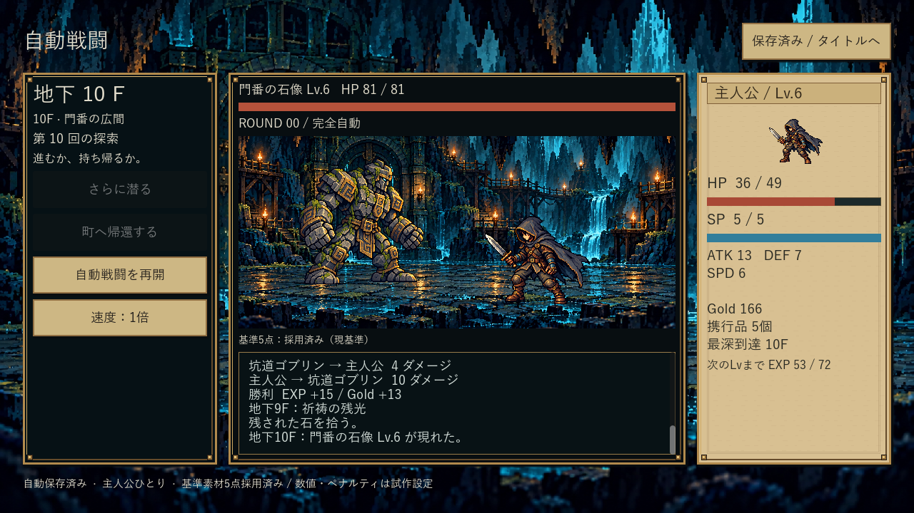
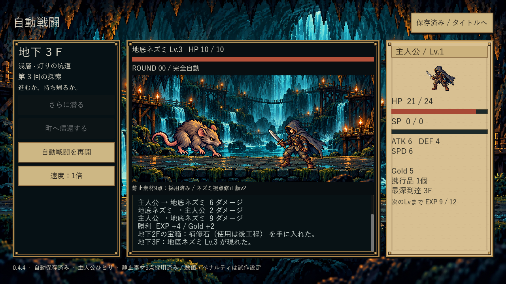
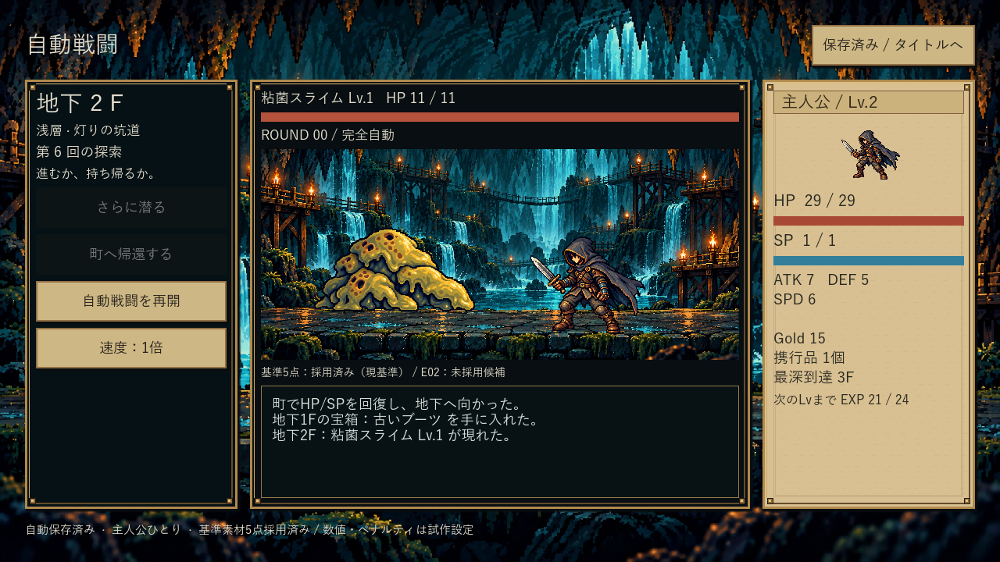
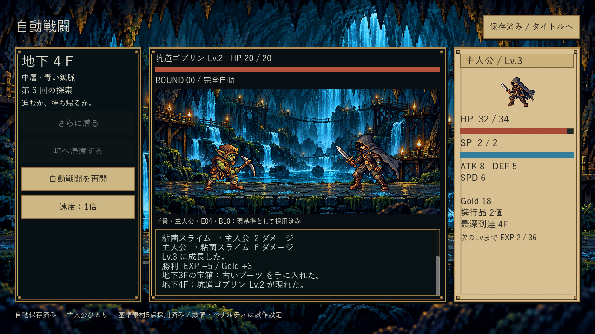
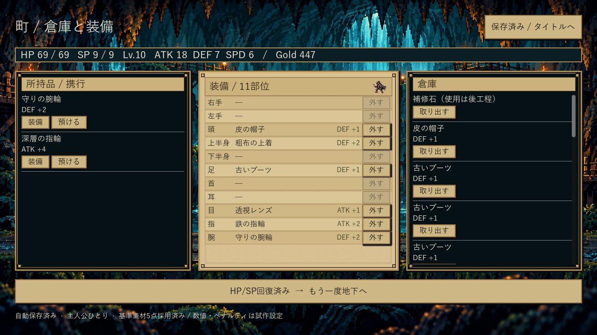

Dive In Under — 工程1の比較
0.4.4 / 4f67201 / Windows x64
静止素材9点と現配置は採用済み。ただし参考の斜め視点への一致は未達。工程1全体は未完了。隊列や仲間のルールは追加していません。
最新0.4.4：戦闘画面の変更を比較
入口は調査時点で最新0.4.3を選択していました。旧版リンクではなく、28pxの位置調整だけでは斜め視点に見えにくい実装でした。今回はボス床内の前後差を56pxへ拡大。通常洞窟の床面は未修正で、視点の完成とはしません。

変更前0.4.3：前後差28px 0.4.4：前後差56px・既存床内へ配置
0.4.4：前後差56px・既存床内へ配置
別変更：ネズミv2を差替え、v1保持 通常戦闘：細い足場はまだ未修正
通常戦闘：細い足場はまだ未修正採用済み4素材の実EXE（採用前0.4.3の収録）
E01 地底ネズミ・現基準として採用
E02 粘菌スライム・現基準として採用E03 鉄羽コウモリ・18px浮き配置案E05 岩甲虫・現基準として採用 PX参考と斜め配置
敵を左奥、主人公を右手前へ。基準5素材は再利用。将来の表示追加余地を考慮した構図で、隊列ルールの決定ではありません。
 PX-02参考：複数人物や手動コマンドは仕様に含めない0.4.3：主人公1人のやや斜め構図
PX-02参考：複数人物や手動コマンドは仕様に含めない0.4.3：主人公1人のやや斜め構図
変更前0.4.2：同じ地面へ横並び0.4.3：10F門番・全身を維持UIの前後とPX比較
 0.4.1：町の能力値コントラスト修正後
0.4.1：町の能力値コントラスト修正後
0.4.2以降：見出し帯・11行・能力効果・真鍮枠 PX-03参考実装：既存の整理操作と11部位を維持
PX-03参考実装：既存の整理操作と11部位を維持探索・タイトル
残項目
採用待ちは解消。参考の床面・カメラ・3/4方向への修正が必要。ネズミは横向き寄り。原画の視点自体は変更していません。PXの細かな装飾・アイコン配置、別解像度・OS物理入力・長時間試遊は未達/未検証。原画9枚SHA不変、コア・保存・データ不変、通常13探索/290操作・別EXE再開は成功。
画面SHA / 290操作 / 配布SHA / 画像制作引継ぎ